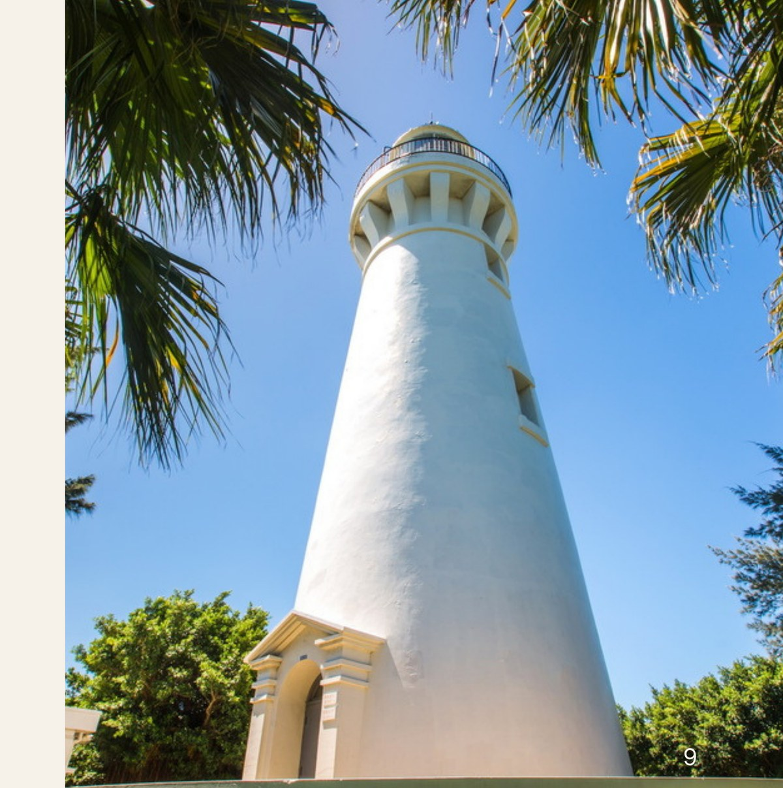
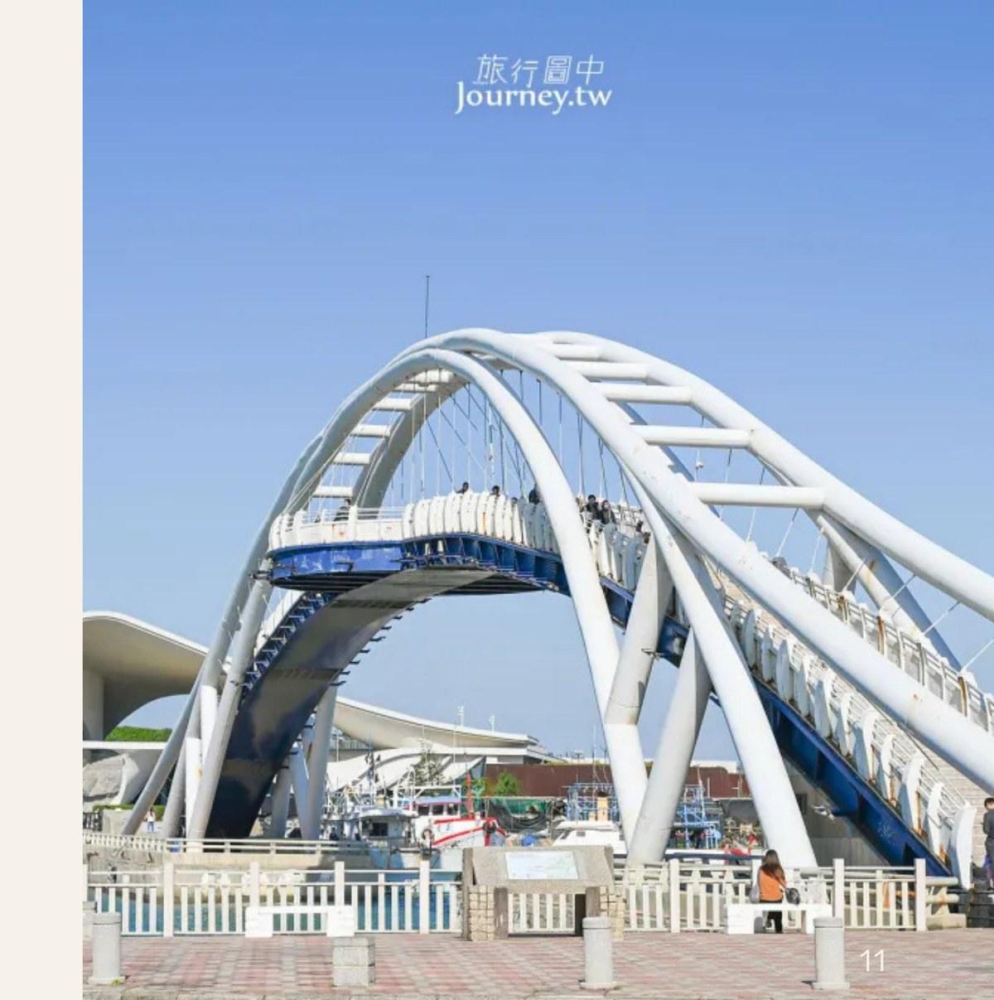
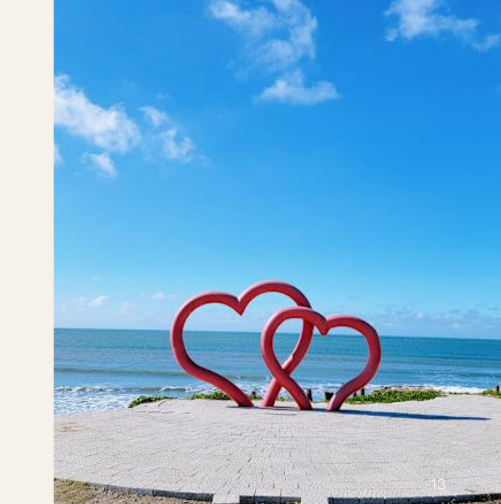

許厝港濕地
濕地、鳥影與開闊天空，是這趟海線旅行最安靜的開場。
這些停靠點各自不大，串在一起卻剛好形成一條有濕地、沙丘、燈塔、漁港與綠廊的一日路線。
濕地、鳥影與開闊天空，是這趟海線旅行最安靜的開場。

風紋、沙丘與海岸線同框，視野遼闊，照片也很有辨識度。

百年燈塔讓路線從自然風景延伸到歷史建築，是很好的中段停靠點。

漁市、觀海橋與海鮮餐廳集中在一起，適合安排午餐與短暫休息。

午後用綠蔭與自行車把步調放慢，讓整天不只有拍照，也有舒服移動。
就在永安漁港周邊，時間允許的話可以順路停留，替漁港段加上一點建築與海洋主題。